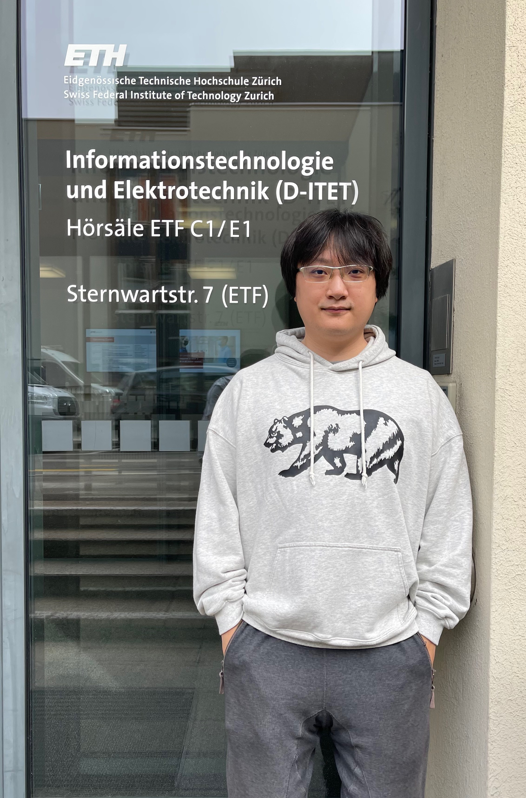

|
Zhu, Xiaoqiang（朱晓强)
|
 |
PhD student,
College of Intelligence and Computing,
Tianjin University, Beiyang Campus,
No. 135 Yaguan Road,
Tianjin City, China
E-mail: abc2611617@tju.edu.cn
|
About me
I received the M.S. degree from Dalian University of Technology, in 2018. I am currently a phd student of Tianjin University, China and jointly doctoral student of ETH Zurich, Switzerland. My main research interests include Machine Learning, Deep Learning and Internet of Things. Also, I do some research about Computer Vision, such as encryption algorithms based on chaos theory. I focus on using AI to solve practical problems.
Research
My research interests include:
Machine Learning
Deep Learning
Internet of Things
Computer Vision
Current work
Under review
X. Zhu, W. Qu, X. Zhou, et al. "Intelligent Fingerprint-based Localization Scheme using CSI Images for Internet of Things". IEEE TNSE, 2021.
X. Zhu, W. Qu, T. Qiu, et al. "Intelligent Adaptation CSI fingerprinting Based on Imitation Learning for Indoor Localization". IEEE TMC, 2021.
Recent publications
X. Zhu, T. Qiu, W. Qu, et al. "Path Planning for Adaptive CSI Map Construction with A3C in Dynamic Environments", IEEE TMC, 2021. doi: 10.1109/TMC.2021.3131318.
X. Zhu, T. Qiu, W. Qu, et al. "BLS‑Location: A Wireless Fingerprint Localization Algorithm Based on Broad Learning", IEEE TMC, 2021. doi: 10.1109/TMC.2021.3073005.
X. Zhu, W. Qu, T. Qiu, et al. "Indoor intelligent fingerprint‑based localization: Principles, approaches and challenges", IEEE COMST, 2020, 22(4): 2634‑2657
X. Wang, Y. Wang, X. Zhu, et al. "A novel chaotic algorithm for image encryption utilizing one‑time pad based on pixel level and DNA leve", Optics and Lasers in Engineering, 2020, 125: 105851.
X. Wang, Y. Wang, X. Zhu, et al. "Image encryption scheme based on Chaos and DNA plane operations", Multimedia Tools and Applications, 2019, 78(18): 26111‑26128.
X. Wang, X. Zhu, X. Wu, et al. "Image encryption algorithm based on multiple mixed hash functions and cyclic shift", Optics and Lasers in Engineering, 2018, 107: 370‑379.
X. Wang, X. Zhu, Y. Zhang, et al. "An image encryption algorithm based on Josephus traversing and mixed chaotic map", IEEE Access, 2018, 6: 23733‑23746.
Full list of publications in Google Scholar.
Grant patents
T. Qiu, X. Zhu, W. Qu. "An Incremental Intelligent Indoor Location Method Based on CSI Image", No. 2021109292344.
T. Qiu, X. Zhu, W. Qu. "An Efficient Indoor Fingerprint Location Method Based on Broad Learning", No. 2020105654394.
Academic service
Reviewer
IEEE Transactions on Mobile Computing
IEEE/ACM Transactions on Networking
IEEE Access
Information Sciences
Nonlinear Dynamic
Optics and Lasers in Engineering
IEEE SmartIoT’ 2019‑2021, IEEE CSCWD’ 2020‑2021, IEEE IWQoS’ 2020
PC Member and Session Chair
Responsibility for the track “Smart Sensor Networks and Internet of Things” of 2020 IEEE CSCWD.
Responsibility for the special session “Artificial Intelligence, Machine learning and Evolutionary Computing” of 2019 IEEE SmartIoT.
Supervising and Mentoring Activities
Master Thesis, 09.2017 - Present
Chen Wu, B.Sc., College of Intelligence and Computing, Tianjin University, Project: “Research on Indoor Fingerprint Location Method Based on Data Fusion and Broad Learning”.
Ziyu Xie, B.Sc., College of Intelligence and Computing, Tianjin University, Project: “Research on Indoor Intelligent Localization Based on Broad Learning System Utilizing Ensemble Strategy”.
Yu Wang, B.Sc., Department of Electronic Information and Electrical Engineering, Dalian University of Technology, Project: “Research on Chaotic Image Encryption Based on One‑time Pad and Region Partition”.
Junjian Zhang, Department of Electronic Information and Electrical Engineering, Dalian University of Technology, Project: “Two Image Encryption Algorithms Based on F‑Y Scrambling and Z‑Z Scrambling”..
Teaching Assistant, 09.2017 - 06.2018
Dalian University of Technology, Undergraduate Teaching, Spring Semester 2018: Design and Practice of Analog Circuit.
Dalian University of Technology, Undergraduate Teaching, Fall Semester 2017: Digital Logic Circuit.
College Students "Innovative Entrepreneurial Training Plan Program", 05.2017 - 08.2018
- Yating Wu, Department of Electronic Information and Electrical Engineering, Dalian University of Technology, Project: “Image Encryption Algorithm Based on Multiple Hash and Random Cyclic Shift”.
Bin Yi, Department of Electronic Information and Electrical Engineering, Dalian University of Technology, Project: “Design of symmetric cryptography system based on new space‑time chaos”.
Education
Ph. D., Software Engineering, Tianjin University, China, 09.2018 - 12.2022 (Expected)
Wins the 1st place in the entrance examination
Member of Tianjin Key Laboratory of Advanced Networking, supervised by Prof.Tie Qiu and Prof. Wenyu Qu
Research Topic: Artificial Intelligence, Internet of Things, Indoor Localization
M.E., Computer Science, Dalian University of Technology, China, 09.2016 - 07.2018
Postgraduate Recommendation, supervised by Prof.XingyuanWang (Top2% of scientists in the world)
Research Topic: Image Processing, Encryption Algorithm, Chaos Theory
Thesis Title: “Image Encryption Algorithm Based on Multiple Mixed Hash Functions”
B.E., Automation, Zhejiang University of Science and Technology, 06.2012
Main Courses: C Programming, Embedded Systems, Computer Network and Communication, Computer Control System.
Competitions and awards
First-Class Scholarship, Zhejiang University of Science and Technology, 10.2011
National Encouragement Scholarship, 12.2011 & 12.2010
The 2nd Prize in the National Advanced Mathematics Contest for Undergraduates (Zhejiang), 12.2011
The 2nd Prize in the Zhejiang Advanced Mathematics Contest for Undergraduates, 04.2011
The 3rd Prize in the Zhejiang Advanced Mathematics Contest for Undergraduates, 10.2009 & 04.2010
The 3rd Prize in the Zhejiang Physics Contest for Undergraduates, 12.2009 & 12.2010
The 1st Prize in the Electronics Design Contests, Zhejiang University of Science and Technology, 12.2010
Activities
Teaching Assistant, Xiamen University, 09.2013-01.2014
Assistant Mentor, Zhejiang University of Science and Technology, 09.2010-06.2011
Journalist, Press Corps of Zhejiang University of Science and Technology, 12.2008-06.2011
Founder and Editor in Chief, Say Ourselves, E-magazine, 12.2009-08.2011
Work experience
Research Scientist, AI Research Institute, Hithink RoyalFlush, 06.2019-Present
Research the newest machine learning algorithms and recommender system technology on stocks and hot news
Apply neural network models to drug-target interaction prediction and evaluate the performance
Publish papers and apply for relevant patents for the corporation
Give lessons on Artificial Intelligence and Recommender Systems to the staff
Research Assistant, Big Data Lab, Xiamen University, 09.2016-02.2019
Instructed two undergraduate and three graduate students in scientific research
Tracked, studied, reproduced, and improved up-to-date machine learning methods
Published papers on machine learning and recommender systems
Software Engineer, Dragon SOFT, 07.2013-06.2014
Developed an electronic target practice system for security guards’ shooting training
Recorded the track of users’ shooting behavior from sensors in a database
Built a model analyzing users’ shooting behavior concerning speed, acceleration and number of cylinders
Assistant Engineer, Gold Electronic, 03.2012-07.2012
Cooperated with motor companies, such as Zotye and BYD, on battery management system development
Developed a testing and analytics platform for performance of a lithium battery with C# (real-time data)
Used CAN bus to collect working data of batteries and analyzed the data for balance power
A brief cv.
|